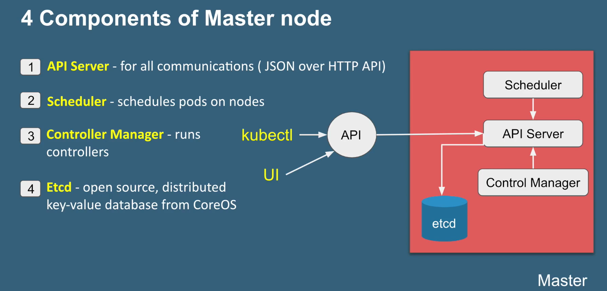
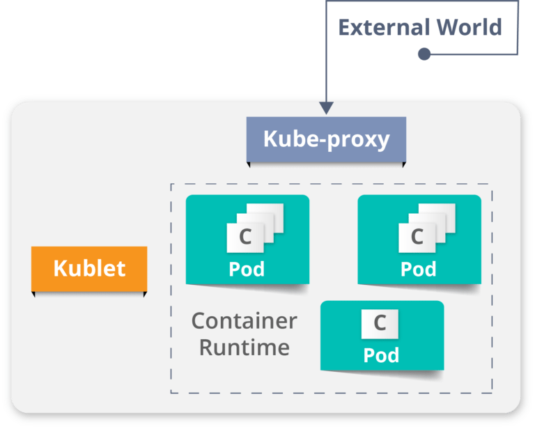
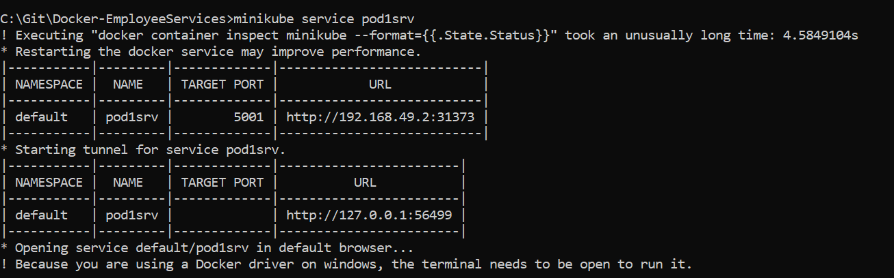

Introduction
Kubernetes is an open-source container management (orchestration) tool. It’s container management responsibilities include container deployment, scaling & descaling of containers & container load balancing.
-
Kubernetes is an open-source system for automating deployment, scaling, and management of containerized applications.
-
Kubernetes is originally developed by Google; it is open sourced since its launch and managed by a large community of contributors
-
Kubernetes (commonly referred to as K8s) is an orchestration engine for container technologies such as Docker and rkt that is taking over the DevOps scene in the last couple of years. It is already available on Azure and Google Cloud as a managed service.
-
Kubernetes can speed up the development process by making easy, automated deployments, updates (rolling-update) and by managing our apps and services with almost zero downtime.
-
It also provides self-healing. Kubernetes can detect and restart services when a process crashes inside the container.
Before Kubernetes
before containers came into existence, the developers and the testers always had a tiff between them. This usually, happened because what worked on the dev side, would not work on the testing side. Both of them existed in different environments. Now, to avoid such scenarios containers were introduced so that both the Developers and Testers were on the same page.
Handling a large number of containers all together was also a problem. Sometimes while running containers, on the product side, few issues were raised, which were not present at the development stage. This kind of scenarios introduced the Container Orchestration System.
Challenges Without Container Orchestration
Why Kubernetes
If your application is in Container form, then we won’t use only 1 or 2 containers in Prod. But rather, 10’s or 100’s of containers for load balancing the traffic and ensuring high availability.
Keep in mind that, as the traffic increases, they even have to scale up the number of containers to service the ‘n’ no of requests that come in every second. And, they have to also scale down the containers when the demand is less.
That is why, the need for container management tools is imminent. Both Docker Swarm and Kubernetes are popular tools for Container management and orchestration.
Features
1. Automatic Binpacking
Kubernetes automatically packages your application and schedules the containers based on their requirements and available resources while not sacrificing availability. To ensure complete utilization and save unused resources, Kubernetes balances between critical and best-effort workloads.
2. Service Discovery & Load balancing
With Kubernetes, there is no need to worry about networking and communication because Kubernetes will automatically assign IP addresses to containers and a single DNS name for a set of containers, that can load-balance traffic inside the cluster.
3. Storage Orchestration
With Kubernetes, you can mount the storage system of your choice. You can either opt for local storage, or choose a public cloud provider such as GCP or AWS, or perhaps use a shared network storage system such as NFS, iSCSI, etc.
4. Self-Healing
Personally, this is my favorite feature. Kubernetes can automatically restart containers that fail during execution and kills those containers that don’t respond to user-defined health checks. But if nodes itself die, then it replaces and reschedules those failed containers on other available nodes.
5. Secret & Configuration Management
Kubernetes can help you deploy and update secrets and application configuration without rebuilding your image and without exposing secrets in your stack configuration.
**6. Batch Execution **
In addition to managing services, Kubernetes can also manage your batch and CI workloads, thus replacing containers that fail, if desired.
7. Horizontal Scaling
Kubernetes needs only 1 command to scale up the containers, or to scale them down when using the CLI. Else, scaling can also be done via the Dashboard (kubernetes UI).
8. Automatic Rollbacks & Rollouts
Kubernetes progressively rolls out changes and updates to your application or its configuration, by ensuring that not all instances are worked at the same instance. Even if something goes wrong, Kubernetes will rollback the change for you.
Architecture

Kubernetes Architecture has the 3 main components:
-
Master nodes
-
Worker/Slave nodes
-
Distributed key-value store(etcd.)

Kubernetes Cluster

Kubernetes Cluster is primarily made up of following components
-
Master:
-
Kube API Server
-
Control Plane (kube-scheduler + kube-controller-manager + Cloud-controller Manager)
-
Etcd
-
-
Node:
-
Kubelet
-
Kube-proxy
-
Container Runtime
-
-
Addons:
-
DNS
-
WebUI
-
Container Resource Monitoring
-
Cluster Level Logging
-
Master Node
It is the entry point for all administrative tasks which is responsible for managing the Kubernetes cluster. There can be more than one master node. If more than one master node, one master node acts as a main master node other node will just follows.
-
The main machine that controls the nodes
-
Main entry point for all administrative tasks
-
It handles the orchestration of the worker nodes

API server:
-
Performs all the administrative tasks through the API server within the master node.
-
In this REST commands are sent to the API server which validates and processes the requests.
-
After requesting, the resulting state of the cluster is stored in the distributed key-value store.
Scheduler:
-
The scheduler schedules the tasks to slave nodes. It stores the resource usage information for each slave node.
-
It schedules the work in the form of Pods and Services.
Controller manager
-
Basically, a controller watches the desired state of the objects it manages and watches their current state through the API server.
-
If the current state of the objects it manages does not meet the desired state, then the control loop takes corrective steps to make sure that the current state is the same as the desired state
ETCD
-
etcd is a distributed key-value store which stores the cluster state.
-
It can be part of the Kubernetes Master, or, it can be configured externally.
-
it is also used to store configuration details such as subnets, ConfigMaps, Secrets, etc.
Worker Node
It is a physical server or you can say a VM which runs the applications using Pods (a pod scheduling unit) which is controlled by the master node. On a physical server (worker/slave node), pods are scheduled. For accessing the applications from the external world, we connect to nodes.
-
It is a worker machine in Kubernetes (used to be known as minion)
-
This machine performs the requested tasks. Each Node is controlled by the Master Node
-
Runs containers inside pods
-
This is where the Docker engine runs and takes care of downloading images and starting containers

**Container runtime: **
-
To run and manage a container’s lifecycle, we need a **container runtime **on the worker node.
-
Sometimes, Docker is also referred to as a container runtime, but to be precise, Docker is a platform which uses **containers **as a container runtime.
**Kubelet: **
- It is an agent which communicates with the Master node and executes on nodes or the worker nodes. It gets the Pod specifications through the API server and executes the containers associated with the Pod and ensures that the containers described in those Pod are running and healthy.
**Kube-proxy: **
-
Kube-proxy runs on each node to deal with individual host sub-netting and ensure that the services are available to external parties.
-
It serves as a network proxy and a load balancer for a service on a single worker node and manages the network routing for TCP and UDP packets.
-
It is the network proxy which runs on each worker node and listens to the API server for each Service endpoint creation/deletion.
-
For each Service endpoint, kube-proxy sets up the routes so that it can reach to it.
Pods
-
A pod is one or more containers that logically go together. Pods run on nodes. Pods run together as a logical unit. So they have the same shared content.
-
They all share the same IP address but can reach other Pods via localhost, as well as shared storage. Pods don’t need to all run on the same machine as containers can span more than one machine. One node can run multiple pods.
Kubernetes vs Docker Swarm
Kubernetes and Docker Swarm are leading container orchestration tools in today’s market.

Use Case
Use Case: How Luminis Technologies used Kubernetes in production
Problem: Luminis, a software technology company used AWS for deploying their applications. For deploying the applications, it required custom scripts and tools to automate which was not easy for teams other than operations. Their small teams didn’t have the resources to learn all of the details about the scripts and tools.
Main Issue: There was no unit-of-deployment which created a gap between the development and the operations teams.
**Solution: **
How did they Deploy in Kubernetes:
They used a blue-green deployment mechanism to reduce the complexity of handling multiple concurrent versions. (As there’s always only one version of the application running in the background)
In this, a component called -Deployer” that orchestrated the deployment was created by their team by open sourcing their implementation under the Apache License as part of the Amdatu umbrella project. This mechanism performed the health checking on the pods before re-configuring the load balancer because they wanted each component that was deployed to provide a health check.
How did they Automate Deployments?

With the Deployer **in place, they were able to engage up deployments to a build pipeline. After a successful build, their build server pushed a new Docker image to a registry on Docker Hub. Then the build server invoked the **Deployer to automatically deploy the new version to a test environment. That same image was promoted to production by triggering the Deployer on the production environment.
Use case -2
Kubernetes Case-Study
-
Yahoo! JAPAN is a web services provider headquartered in Sunnyvale, California. As the company aimed to virtualize the hardware, company started using OpenStack in 2012. Their internal environment changed very quickly. However, due to the progress of cloud and container technology, the company wanted the capability to launch services on various platforms.
-
Problem: How to create images for all required platforms from one application code, and deploy those images onto each platform?
-
For your better understanding, refer to the below image. When the code is changed at the code registry, then bare metal images, Docker containers, and VM images are created by continuous integration tools, pushed into the image registry, and then deployed to each infrastructure platform.

- Now, let us focus on container workflow to understand how they used Kubernetes as a deployment platform. Refer to the below image to sneak peek into platform architecture.

Solution of Case Study - Kubernetes Tutorial - Edureka
- OpenStack instances are used, with Docker, Kubernetes, Calico, etcd on top of it to perform various operations like Container Networking, Container Registry, and so on.
DevOps Training
-
When you have a number of clusters, then it becomes hard to manage them right?
-
So, they just wanted to create a simple, base OpenStack cluster to provide the basic functionality needed for Kubernetes and make the OpenStack environment easier to manage.
-
By the combination of Image creation workflow and Kubernetes, they built the below toolchain which makes it easy from code push to deployment.

Solution of Case Study - Kubernetes Tutorial - Edureka
This kind of toolchain made sure that all factors for production deployment such as multi-tenancy, authentication, storage, networking, service discovery were considered.
- That’s how folks, Yahoo! JAPAN built an automation toolchain for -one-click” code deployment to Kubernetes running on OpenStack, with help from Google and Solinea.
Installation

Kuberneters Architecture

Kubernetes Master

-
kube-apiserver: REST API endpoint to serve as the frontend for the Kubernetes control plane
-
etcd: Key value store for the cluster data (regarded as the single source of truth)
-
kube-scheduler: Watches new workloads/pods and assigns them to a node based on several scheduling factors (resource constraints, anti-affinity rules, data locality, etc.)
-
kube-controller-manager: Central controller that watches the node, replication set, endpoints (services), and service accounts.
Node Components
 Unlike Master components that usually run on a single node (unless High Availability Setup is explicitly stated), Node components run on every node.
Unlike Master components that usually run on a single node (unless High Availability Setup is explicitly stated), Node components run on every node.
-
kubelet: Agent running on the node to inspect the container health and report to the master as well as listening to new commands from the kube-apiserver
-
kube-proxy: Maintains the network rules
-
container runtime: Software for running the containers (e.g. Docker, rkt, runc)
-
Nodesingle machine in your cluster -
PodsKubernetes doesn’t run containers directly; instead it wraps one or more containers into a higher-level structure called a pod. -
Master + Nodes = Kubernetes Cluster
In Simple,
- We have a Cluster
- Inside Cluster, we have POD
- Inside POD, We have a Container
- Running Cantainer called as a Service, which is accessed by hostname:port.
MiniKube Installation Windows 10
minikube is local Kubernetes, focusing on making it easy to learn and develop for Kubernetes.
All you need is Docker (or similarly compatible) container or a Virtual Machine environment, and Kubernetes is a single command away: minikube start
-
Download .exe from Here
- Open PowerShell as Administrator & Set Path by running below code
$oldpath=[Environment]::GetEnvironmentVariable("Path", [EnvironmentVariableTarget]::Machine) if($oldpath -notlike "*;C:\minikube*"){` [Environment]::SetEnvironmentVariable("Path", $oldpath+";C:\minikube", [EnvironmentVariableTarget]::Machine)` } - Start your cluster
minikube start --driver=hypervIf Any error Create Swith manually in Hyper-V Manager, Follow Here

Run Below command
minikube start --vm-driver hyperv --hyperv-virtual-switch "MiniSwitch" - Install minikube Dashboard
minikube dashboard
Open above URL in Browser

Create Pod.yaml
A POD can have one or more containers
1.Create pod.yaml in Project Root
apiVersion: v1
kind: Pod
metadata:
name: pod1
labels:
app: java
spec:
containers:
- name: pod1
image: smlcodes/empapp:latest
2.Check if any other PODS are running
kubectl get pods
No POD Resources are Running
3.Now Create POD, using below cmd where pod.yaml resides
kubectl create -f pod.yaml

Now if we see Kubernetes Dashboard, You will find POD with one Node there


4.We have POD created, inside we have empapp container Running. To expose the application to outside world we need to do kubectl expose -h
Syntax:
kubectl expose pod <POD_NAME> --name <EXPOSE_SERVICE_NAME> --port <PORT_NO> --type [ClusterIP/NodePort/LoadBalancer]
kubectl expose pod pod1 --name pod1srv --port 5001 --type NodePort
5.To access Application, we must know the IP/host where pod1srv service is Running. for that we use below one.
minikube service pod1srv

ReplicationController
Replication Controller is one of the key features of Kubernetes, which is responsible for managing the pod lifecycle. It is responsible for making sure that the specified number of pod replicas are running at any point of time. It is used in time when one wants to make sure that the specified number of pod or at least one pod is running. It has the capability to bring up or down the specified no of pod.
It is a best practice to use the replication controller to manage the pod life cycle rather than creating a pod again and again.
apiVersion: v1
kind: ReplicationController --------------------------> 1
metadata:
name: Tomcat-ReplicationController --------------------------> 2
spec:
replicas: 3 ------------------------> 3
template:
metadata:
name: Tomcat-ReplicationController
labels:
app: App
component: neo4j
spec:
containers:
- name: Tomcat- -----------------------> 4
image: tomcat: 8.0
ports:
- containerPort: 7474 ------------------------> 5
Setup Details
-
Kind: ReplicationController → In the above code, we have defined the kind as replication controller which tells the kubectl that the yaml file is going to be used for creating the replication controller.
-
name: Tomcat-ReplicationController → This helps in identifying the name with which the replication controller will be created. If we run the kubctl, get rc < Tomcat-ReplicationController > it will show the replication controller details.
-
replicas: 3 → This helps the replication controller to understand that it needs to maintain three replicas of a pod at any point of time in the pod lifecycle.
-
name: Tomcat → In the spec section, we have defined the name as tomcat which will tell the replication controller that the container present inside the pods is tomcat.
-
containerPort: 7474 → It helps in making sure that all the nodes in the cluster where the pod is running the container inside the pod will be exposed on the same port 7474.

ReplicationSet
Replica Set ensures how many replica of pod should be running. It can be considered as a replacement of replication controller. The key difference between the replica set and the replication controller is, the replication controller only supports equality-based selector whereas the replica set supports set-based selector.
apiVersion: extensions/v1beta1 --------------------->1
kind: ReplicaSet --------------------------> 2
metadata:
name: Tomcat-ReplicaSet
spec:
replicas: 3
selector:
matchLables:
tier: Backend ------------------> 3
matchExpression:
{ key: tier, operation: In, values: [Backend]} --------------> 4
template:
metadata:
lables:
app: Tomcat-ReplicaSet
tier: Backend
labels:
app: App
component: neo4j
spec:
containers:
- name: Tomcat
image: tomcat: 8.0
ports:
- containerPort: 7474
Setup Details
-
apiVersion: extensions/v1beta1 → In the above code, the API version is the advanced beta version of Kubernetes which supports the concept of replica set. -
kind: ReplicaSet → We have defined the kind as the replica set which helps kubectl to understand that the file is used to create a replica set. -
tier: Backend → We have defined the label tier as backend which creates a matching selector. -
{key: tier, operation: In, values: [Backend]}→ This will help matchExpression to understand the matching condition we have defined and in the operation which is used by matchlabel to find details.
Run the above file using kubectl and create the backend replica set with the provided definition in the yaml file.

Kubernetes - Commands
Listing Resources
To list one or more pods, replication controllers, services, or daemon sets, use the kubectl get command.
Generate a plain-text list of all namespaces:
kubectl get namespaces
Generate a plain-text list of all pods:
kubectl get pods
Generate a detailed plain-text list of all pods, containing information such as node name:
kubectl get pods -o wide
Generate a list of all pods running on a particular node server:
kubectl get pods --field-selector=spec.nodeName=[server-name]
List a specific replication controller in plain-text:
kubectl get replicationcontroller [replication-controller-name]
Generate a plain-text list of all replication controllers and services:
kubectl get replicationcontroller,services
Generate a plain-text list of all daemon sets:
kubectl get daemonset
Creating a Resource
Create a resource such as a service, a deployment, a job, or a namespace using the kubectl create command.
For example, to create a new namespace, type:
kubectl create namespace [namespace-name]
Create a resource from a JSON or YAML file:
kubectl create --f [filename]
Applying and Updating a Resource
To apply or update a resource use the kubectl apply command. The source in this operation can be either a file or the standard input (stdin).
Create a new service with the definition contained in [service-name].yaml:
kubectl apply -f [service-name].yaml
Create a new replication controller with the definition contained in [controller-name].yaml:
kubectl apply -f [controller-name].yaml
Create the objects defined in any .yaml, .yml, or .json file in a directory:
kubectl apply -f [directory-name]
To update a resource by editing it in a text editor, use kubectl edit. This command is a combination of the kubectl get and kubectl apply commands.
For example, to edit a service, type:
kubectl edit svc/[service-name]
This command opens the file in your default editor. To choose another editor, specify it in front of the command:
KUBE_EDITOR="[editor-name]" kubectl edit svc/[service-name]
Displaying the State of Resources
To display the state of any number of resources in detail, use the kubectl describe command. By default, the output also lists uninitialized resources.
View details about a particular node:
kubectl describe nodes [node-name]
View details about a particular pod:
kubectl describe pods [pod-name]
Display details about a pod whose name and type are listed in pod.json:
Kubectl describe --f pod.json
See details about all pods managed by a specific replication controller:
kubectl describe pods [replication-controller-name]
Show details about all pods:
kubectl describe pods
Deleting Resources
To remove resources from a file or stdin, use the kubectl delete command.
Remove a pod using the name and type listed in pod.yaml:
kubectl delete -f pod.yaml
Remove all pods and services with a specific label:
kubectl delete pods,services -l [label-key]=[label-value]
Remove all pods (the command includes uninitialized pods as well):
kubectl delete pods --all
Executing a Command
Use kubectl exec to issue commands to a container or to open a shell in a container.
Receive output from a command run on the first container in a pod:
kubectl exec [pod-name] -- [command]
Get output from a command run on a specific container in a pod:
kubectl exec [pod-name] -c [container-name] -- [command]
Run /bin/bash from a specific pod. The received output comes from the first container:
kubectl exec -ti [pod-name] -- /bin/bash
Modifying kubeconfig Files
The kubectl config command lets you view and modify kubeconfig files. This command is usually followed by another sub-command.
Display the current context:
kubectl config current-context
Set a cluster entry in kubeconfig:
kubectl config set-cluster [cluster-name] --server=[server-name]
Unset an entry in kubeconfig:
kubectl config unset [property-name]
Printing Container Logs
To print logs from containers in a pod, use the kubectl logs command.
The syntax for printing logs is:
kubectl logs [pod-name]
To stream logs from a pod, use:
kubectl logs -f [pod-name]
Short Names for Resource Types
Some of the kubectl commands listed above may seem unwieldy due to their length. For this reason the names of common kubectl resource types also have shorter versions.
For example, consider the command mentioned above:
kubectl create namespace [namespace-name]
You can also write this command as:
kubectl create ns [namespace-name]
Here is the full list of kubectl short names:
| Short Name | Long Name |
csr |
certificatesigningrequests |
cs |
componentstatuses |
cm |
configmaps |
ds |
daemonsets |
deploy |
deployments |
ep |
endpoints |
ev |
events |
hpa |
horizontalpodautoscalers |
ing |
ingresses |
limits |
limitranges |
ns |
namespaces |
no |
nodes |
pvc |
persistentvolumeclaims |
pv |
persistentvolumes |
po |
pods |
pdb |
poddisruptionbudgets |
psp |
podsecuritypolicies |
rs |
replicasets |
rc |
replicationcontrollers |
quota |
resourcequotas |
sa |
serviceaccounts |
svc |
services |